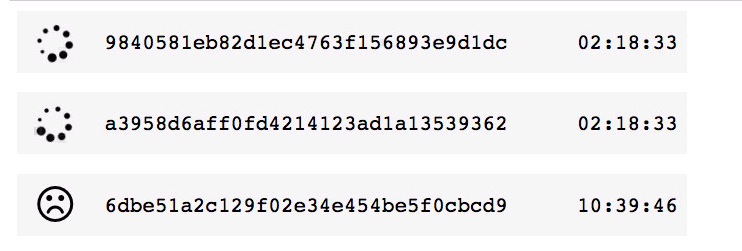
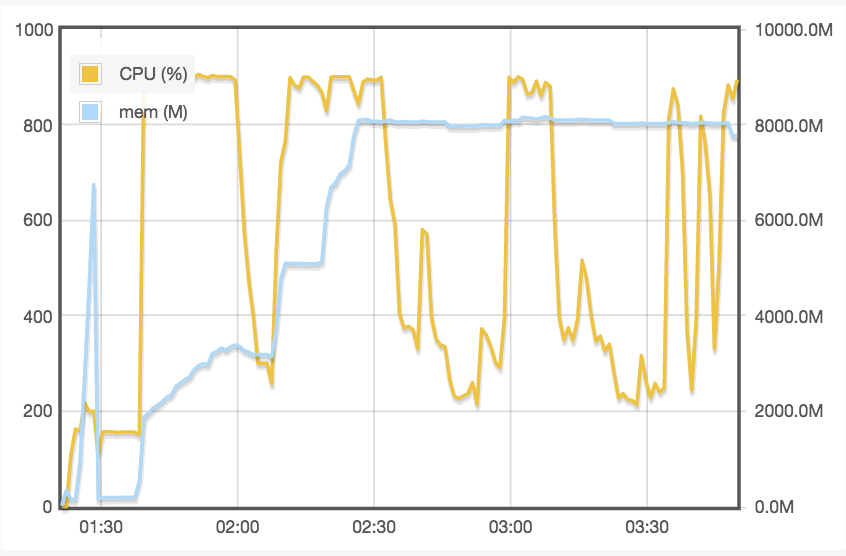

SoS Magics¶
In addition to SoS statements, you can use a few SoS magics in Jupyter notebook.
- SoS magics have to be specified at the beginning of a cell, although they can be specified after empty lines and comments.
- Lines ending with
"\"will be joined so you can break long magics into multiple lines - Multiple magics can be used in a single cell.
This section lists all magics that SoS supports. To get a list of magics, you can enter % at the beginning of a line and press tab. You can also get the detailed usage of a magic by executing a magic with -h option, for example:
%use -h
Note that subkernels can have their own magics, and SoS basically processes all blank lines and known magics and send rest of the cell content to the subkernel. That is to say, because SoS does not define a pwd magic, the following magic would be process by the Python 3 subkernel.
%pwd
%cd¶
Change the current working directory of the SoS kernel to dir. The working directory of started subkernels is not affected.
%clear¶
Magic clear clears task lists or the output of cells in the following ways:
If
%clearis used in a regular cell, the output of the cell will be cleared after the cell is executed, effectively suppress any output of the cell. This is useful in suppressing long output of sos workflows or shell commands.If
%clearis executed in the side panel, the output of currently selected cells in the main notebook will be cleared. This magic can then be used as a way to selectively clean up the main notebook without leaving the magic itself in the notebook.If
%clear -aor%clear --allis executed, it would remove the output of all cells in the notebook, leaving a clean notebook without any output. This is usually used in removing all tests results and leaving only defined workflow steps in the notebook.If option
-s(--status) is specified with a status (most frequentlycompleted), all tasks with matching status will be removed. The aforementioned rules apply to the cells that will be affected.
For example, the output of the following cell is suppressed with the %clear magic:
%clear
python:
print('hello')
%dict¶
The %dict magic lists or rests the content of SoS dict, using syntax
%dict [-a|-all] [-k|--keys] [-r|--reset] [var1] [var2] ...where
var1,var2etc are name of variables. All variables will be displayed if no variable is specified.-a|-all: list all dictionary keys, including SoS functions and variables.-k|--keys: list only keys, not their values-r|--reset: reset the dictionary to its original content (with only SoS internal values)
%dict --reset
%dict --keys
and reset the dictionary with the --reset option
%dict --keys
For example, you can see all keys in the SoS dictionary using
%dict --reset
%dict --keys
and reset the dictionary with the --reset option
%dict --keys
%expand¶
Script in SoS cells are by default sent to SoS or the subkernels in verbatim. However, similar to the expand option of the SoS actions, you can interpolate scripts before they are executed by the kernels. Basically,
- By default, scripts are not interpolated.
- With
%expandmagic, scripts are treated as Python f-string and are interpolated with sigil{ } - With
%expand ${ }or other sigils, scripts are interpolated with specified sigil so that you can avoid using symbols that already used in the script.
As you can imagine, string interpolation allows passing information from the SoS kernel to the subkernels. Although this method is less flexible and powerful than inter-kernel variable exchange using magics such as %get, it is sometimes easier to use and can be especially useful if you plan to include the script as a SoS action in a SoS workflow.
For example,
par = 100
%expand
cat("A parameter {par} is specified.")
If the script contains { }, which is quite common in R, you can double the braces
%expand
if ({par} > 50) {{
cat("A parameter {par} greater than 50 is specified.");
}}
If there are multiple braces, it is obviously better to use a different sigil, such as ${ } to interpolate the script
%expand ${ }
if (${par} > 50) {
cat("A parameter ${par} greater than 50 is specified.");
}
%get¶
Magics %get retrieve variables from SoS or another subkernel to the current subkernel started by magic %use.
For example,
%use sos
a = [1, 2, 3]
b = [1, 2, "3"]
c = True
%use R
%get a b c
a
b
c
The %preview magic cannot be used to preview variables in the subkernel so we have to list them one by one. As you can see, a Python list can be converted to R array or list depending on its content.
Similar to the %put magic, SoS automatically translate variables with invalid Python names. For example
%use sos
_var = 'Hi, Bob'
%use R
%get _var
.var
%use sos
Also similar to the --to option of magic %put, magic %get accept a parameter --from to get variables from SoS (default) any kernel. For example,
R_var <- 'R variable'
%get --from R R_var
R_var
Depending on how the language module is defined, such cross-subkernel variable exchange can be achived directly, or by way of SoS, so after the %get --from R R_var statement, the R_var variable might or might not exist in the SoS kernel.
%matplotlib¶
Similar to ipython's matplotlib magic, the %matplotlib inline magic allows the display of matplotlib figures inline in Jupyter notebook or qtconsole.
%matplotlib inline
import matplotlib.pyplot as plt
import numpy as np
x = np.linspace(0, 10)
plt.plot(x, np.sin(x), '--', linewidth=2)
plt.show()
![](data:image/png;base64,iVBORw0KGgoAAAANSUhEUgAAAX8AAAEACAYAAABbMHZzAAAABHNCSVQICAgIfAhkiAAAAAlwSFlz
AAALEgAACxIB0t1+/AAAIABJREFUeJzt3Xl8FdX5x/HPExYVFHADBERwAREXBLUIKnEriD8WUVGp
G+7WVn9aW7EuYK0L2upLtC5Qyg8FquLGohSKCi6goAiooEKVVaBSRHYD5Pz+OImhkBCSu5yZO9/3
65XXndxM5jxcbp47c+ac55hzDhERSZa80AGIiEj2KfmLiCSQkr+ISAIp+YuIJJCSv4hIAin5i4gk
UFqSv5kNNrMVZjZ7J/sMMLN5ZjbTzFqlo10REamcdJ35DwE6lvVDMzsLOMQ5dxhwLfB0mtoVEZFK
SEvyd869B3y/k126Ac8W7fshUNvM6qWjbRERqbhs9fk3BBZv8/3SoudERCQA3fAVEUmgqllqZylw
4DbfNyp6bgdmpmJDIiIV5JyziuyfzjN/K/oqzWjgUgAzawusds6tKOtAzrlYffXr5wDHQQc5rr/e
8fDDjpdfdixatOO+c+c6qlRx1K7teOABx4YNZR+3b9++wf9tUfjS65D7r8WaNY5rr/V/R+A4/XRH
YeGO+331leOdd/zPoS/guOQSR0FB+H9DyK/KSMuZv5mNAPKBfc1sUdH/SnWfx91A59wbZtbZzOYD
64He6Wg3Ku68EwoL4aabYJ99dr6vGZx+OkyYALffDk88AQ89BL16ZSdWkaiZOBGuvBIWLYJq1eDu
u+G22/zfyvYOO8x/TZgAZ58NkyfDli3+96Ri0pL8nXPlpi7n3K/S0VYUVakC99yza/s2bw7jx/s3
/O9+B598Ar/4hX+jX3RRZuMUiZqtW+GWW3zib9MGhgyBo44q//fy8uBnP4PHHoP99st8nLlIN3wr
qJJXWDs44wz46CPo399/IBx33I775Ofnp6exmNPrUCLXXosqVeBvf4P77oMPPti1xF8sPz+fZs3K
v9qW0lll+4syxcxc1GIqNmcOXHYZjBkD9eun77gbNkCNGuk7nkjSbdkCVbM1nCUCzAwX8IZvTvvx
R98tU3y2nk5K/CLp89VXvgvphRdCRxJtSv67qG9fmD0bDjkE7r03dDQi8bRxY+bbeOst/7d69dUw
b17m24srJf9d8O67fkROXh48+yzsuWdm23MO3nkns22IZNvmzX6k2zXXwKZNmWvn2muhZ09YuxbO
Pz87HzhxpORfjrVrfT+/c35oZrt2mW/zuuugQwf/QSOSK267DaZOhXHjYN26zLVjBoMG+av0WbPg
5psz11acKfmXo0YN+OUv4cQT/fjjbDj2WP949dUwZUp22hTJpFdegUcf9TdhX3wx88Mza9WCkSOh
enV45hl/9S7/TaN9dtHWrX5YWrbceCM8/jg0bAhffgk1a2avbZF0mj/f34BdswYeeSS7Z+KDBvkJ
mNdcU/qksVxRmdE+Sv4RtWULtG0LH38Mf/gD3HVX6IhEKqdnT38W3qMHvPRSbifhUDTUM4dUrQp/
+pPffvllf/YiEkeDB8P//q+fzKXEHx068y9FlCaIvPYadO7s+y5FREqjM/80WLzYF4566aXQkXjd
uyvxi6SThn56Sv7beeABWLAAhg8PHYmIpFv//n4QxZw5oSMJT8l/G0uW+P5JM7j//tDRiMRXxHqT
f7JwIXz/ffaGbUeZkv82HnwQCgr86IQWLUJHU7oNG/ywU5Go+vJLX6X2jTdCR7KjO++E3Xf3gyhm
zAgdTVhK/kWWLvVjgs2iO6zylVegWTMYNix0JCJlu/tun1hHjQodyY4aNIAbbvDbd94ZNpbQNNqn
yMyZcMUVcOihfgZiFA0bBpdc4vssv/pK1UAlej75BFq3ht1285O7GjUKHdGOVq6Epk19iYn33oP2
7UNHlDqN9klBq1Z+QtVf/xo6krL16uX/sJYu9TMlRaLmjjv84w03RDPxgy8tccst0LEj1K4dOppw
dOYfM2+/Daed5ss9zJ+f3kVlRFLx7rtwyim+6u0330R7ecVsl2vJNJ35J8Cpp0KXLrB+vS/7IBIV
69ZB48bwm99EO/FDbiX+yorIPFapiAcf9MPVzjwzdCQiJc46y9+L0mi0eEh0t8/q1X6Bllq1stKc
iEhGqNungu6/H5o08RUHRSS5Fi+GDz8MHUV2JTb5f/cd/OUvvvukadPQ0YhIKFOm+CHev/516Eiy
K7HJ/5FH/GzZzp39bEQRqbh16+Lfx9+qlZ8zM326H+6dFIlM/qtXwxNP+O1cqPGxdi2sWBE6Ckmi
fv3g4IPh9ddDR1J5NWpA795++6mnwsaSTYlM/sOH+zOWU0+Fn/0sdDSpefllP+M36VPVJfs2boQh
Q2DRIqhbN3Q0qbnuOv84YoQ/OUyCRCb/o46Crl39wuxxd+SR/sx/2DD4z39CRyNJ8uKLsGqV7zY9
/vjQ0aSmWTM4/XT/gfbss6GjyY5EJv9TTvFFp847L3QkqWveHDp1gk2bol2aQnLPk0/6x1w4iQK/
1OR118EZZ4SOJDsSPc4/V4wb529cN24M//pXdJaglNz10Uf+bH/vvf06GCoyGJbG+SdUx45+6clF
i2D06NDRSBIUFEDbtv5GqRJ/POkcMQfk5flL1okT4aCDQkcjSdCuHUydCps3h45EKisx3T7O+bv4
e++d9kOLiASlbp+d+PhjX/74V78KHYmIxMHcubBlS+goMicxyX/gQN9PWb166EhEJOquvBKOOALG
jg0dSeYkIvmvXQt//7vfvvrqsLGIxFlS+vhbtvSPuTzjNxHJ//nn/Yzek0+GFi1CR5Mdq1b5+xwi
6bJ4sV8AvU+f3H9vXX457L47TJjgV8zLRYlI/gMH+sdrrgkbR7ZcdZW/v/HJJ6EjkVwycKBf/Hzh
QrAK3VqMn332gQsv9NtPPx02lkzJ+eT/44++nEOjRnDuuaGjyY499vCX5889FzoSyRUFBTBokN++
/vqwsWRL8b9zyBBf9iHXJGao5+bNUK1a2g8bSdOm+YJ19er52Zea8SupGjvWrx3dogV8/nnun/mD
79rq0gVat4Zbb432in+VGeqZmLSQlMQPftp9s2Z+PdWJE33tH5FUjBjhHy+5JBmJH/y/U6N9JFbM
4OKL/fawYWFjkfhzznefVq0KF10UOhpJFyX/HHXxxVC7Nuy7b+hIJO7M/LoR//63X/NackNi+vyT
SJPaRJJB5R220b+/7+t+553QkYSjxC+SXrlU7iFnk/+wYTB+vJ/cJSKSitGj/ZDxP/0pdCTpk5PJ
/7PP/Nc++yRnVR4RyRwzn1OKRz3lgrQkfzPrZGZfmNlXZnZbKT/vYGarzWxG0VdGlxt//nn/eO65
6voQqawFC3yZg7ffDh1JeB07+nLwn37qv3JBysnfzPKAJ4COQEvgIjM7vJRd33HOtS76+mOq7ZbF
uZLkXzw9O+lGjvRXQLnyppXsGDEChg4tmdmbZNWrw/nn++3iIpFxl44z/xOAec65hc65zcDzQLdS
9svK1JAlS/yiLfXrQ4cO2Wgx+t58039pzL/sKudg+HC/3atX2Fiiovh1GDEiNwrbpSP5NwQWb/P9
kqLntneimc00s9fN7Ig0tFuqAw+EZcv8pWqVKplqJV4uucQ/Dh8OW7eGjUXiYfZsmDPHzxPp2DF0
NNFw8sm+RljNmrB8eehoUpet8g4fA42dcxvM7CzgNaBZWTv369fvp+38/Hzy8/Mr1Fi1anB4aR1P
CdWuHTRtCt98A5Mnw2mnhY5Ioq74xub55yerNMrO5OX5FQH33z98iYtJkyYxadKklI6R8iQvM2sL
9HPOdSr6vg/gnHP9d/I73wBtnHOrSvmZJnllwN13w733+ht4Q4aEjkaizDlfG2r+fHj3XTjppNAR
SXlCTfKaDhxqZgeZWXXgQmD0doHV22b7BPyHzg6JXzKnuNbPe+9BYWHYWCTazGD6dHj2WX/VKLkp
LeUdzKwT8Bj+w2Swc+5BM7sWfwUw0MxuAK4HNgMbgZudcx+WcSyd+WfIu+/CiSeqxLNIrqnMmX/O
1PaZPt33x513Huy3XwYCExGJqETX9nn6ab/yzoABoSMRkVw3bx7cdReMGxc6ksrLieT/44/wyit+
W/XGRSTTxo2DP/4x3uv75kTyHz/eT+w65hi/zJyIVNyGDX7lqk2bQkcSfT17+qGf48bBqpgOXcmJ
5K9yDhWzfDk884y/YhIpNn68X7P2rLNCRxJ99ev7+TKbN/uKn3EU++S/fj2MGuW3L7ggbCxx0bkz
XHedX99XpFhx16mS/67p0cM/Fr9ucRP75L/77v5S9b77/CxWKd855/jHl18OG4dER0EBjBnjt4vf
H7Jz3bv7ORETJviT0LjJmaGesuvmzIGWLf16B8uXa/q++C6fTp38giWzZ4eOJj6GDPFzZ0KXk0n0
UE/ZdUcc4d+sq1b5Wj8ir77qH3XWXzG9e4dP/JWl5J9Q557rH9X1I+Ard3bvXvK+kNynbp+E+vRT
P+KnVy/VbxGJu0SVd9iyBf7zH6hXr9xdRURyWqL6/CdPhgMO8CWKRURCcg5mzvQnpXER2+T/6qv+
BW/QIHQkIpJ0P/85HHssvP9+6Eh2XSyTv3Pw2mt+W6MTRCovYr2+sdW6tX+M04SvWCb/jz6CpUuh
YUNo0yZ0NLlh48bQEUgIbdv6sijffRc6kngrnu1b3CMRB7FM/sVjkrt398WVpPKWLfPL9B19dHze
tJIec+fCtGl+hmqdOqGjibfjj/dd0IsX+3VF4iCWqXOvvfwL3b176Ejir25dX5t8/nyYNSt0NJJN
xSdRXbtqlneq8vJKuqDj0vUTy+R/++3+E/a000JHEn9VqqjWT1IVJ//iLgtJTY8ecNxxcMghoSPZ
NbEd5y/pM2GCn+HZooWv+yO5b9EiOOggqFnT9/fvsUfoiCQViRrnL+lz6qmw996+D3ju3NDRSDbM
nOkr4p51lhJ/UlUNHYCEV62aX8Rj4kR/RqjV0HJf166wciV8/33oSCQUdfsIAGvW+BvpVqELRxGJ
gpzv9vntb+GRR/x6vZJetWop8YskSWzO/L//3g9LdA5WrIB99w0QnIhIOb77Dvr39wslDRuWnTZz
+sz/jTd80aRTTlHiF5Ho2m03ePxxGDEC/v3v0NGULTbJXysNiaRu2jR48UX44YfQkeSuWrX8HCTn
/ElrVMUi+W/cCOPG+e1u3cLGkusWLIBHH4UpU0JHIpnw5JNwwQXw1FOhI8ltXbr4x9Gjw8axM7FI
/m+9BRs2+CJujRuHjia3Pfcc3HKLX5hacsvWrTB2rN/WSVRmFSf/CRNg06awsZQlFsn/rLNg6lR4
6KHQkeS+rl3945gxUFgYNhZJr6lT/ep3hx4a30XH4+LAA6FVK1i/Hj78MHQ0pYvFJK+8PF96VjLv
6KP9tP+FC33/sF733FHcBdG1q4b1ZsMzz0D9+tHtrYjFmb9kj1nJ2X+U+yul4or/P4u7JCSzTjgh
uokflPylFEr+ucc5+OMf4aqroH370NFIFMRmkpdkT0EB/OEPcPbZvttHXQQi0VaZSV6RTv6rVsHa
tb4PWkRESpdzM3yHD4cmTeDWW0NHIiJSOVu3+pFWUVsnOdLJv7jP+ZhjwsYhIlJZvXtDu3bw0kuh
I/lvkU3+a9bA5Ml+mGfnzqGjEYmvzZtDR5Bsp57qH8eMCRvH9iKb/MeP92/a9u1VyC00LfgRXwUF
0KiRv3kf1Zmmue7ss/2giTffhHXrQkdTIrLJX2OSw1u3zs9SbNLEJxGJn8mTfWXJxYv9so2SfXXr
+lFzBQW+3ENURDb5N28OzZop+Ye0556+xMOaNTBpUuhopDK2ndUr4WxbNiUqIpv877wTvvxSNUhC
04Sv+HJOV9BR0bWr7/s/6aTQkZSI9Dh/CW/6dD9N/cADfb0fTfiKj9mz/Ui5evXg22/94AnJTTk3
zl/Ca9MGDjjA9xnPmhU6GqmI+fP9wiJduijxy45iUdVTwsnL86MVJk+O3iQV2bkePeB//sfPkhfZ
nrp9pFybNmmkiEiU5Uy3z733+ro+Eg1K/CK5J5Jn/lWrOlauhNq1Q0cjIpI+337rK+b+8AP8/e/p
O26wM38z62RmX5jZV2Z2Wxn7DDCzeWY208xa7ex4HToo8YtI7qlRAwYPhpEjw8+cTzn5m1ke8ATQ
EWgJXGRmh2+3z1nAIc65w4Brgad3dkyNSRapvGnT4G9/8zN7JVrq1IGTT/aVPseNCxtLOs78TwDm
OecWOuc2A88D3bbbpxvwLIBz7kOgtpnVK+uASv7R9MUXfjWo998PHYnszKBBcOWVfg1ZiZ6ozPZN
R/JvCCze5vslRc/tbJ+lpezzk4MPTkNUknbPPw933QXPPRc6EilLYSGMHeu3dRIVTcX/L+PGha24
Gslx/v369ftpOz8/n/z8/GCxSIkuXeCee3xycU6zfaPo449h+XI/I1vrYETTIYdAixb+SnrmTDj+
+IofY9KkSUxKseBWyqN9zKwt0M8516no+z6Ac87132afp4G3nXMvFH3/BdDBObeilONpnH9EOefL
A3/7LcyYAcceGzoi2d7dd/uh0tdfD08+GToaKcuMGf4Dev/903O8UKN9pgOHmtlBZlYduBDYvgzY
aODSoiDbAqtLS/wSbWZ+xiiE76+U0hX/v6jLJ9pat05f4q+slJO/c24r8CtgAvA58Lxzbq6ZXWtm
1xTt8wbwjZnNB54BfplquxJGcVJR8o+m+++HG24oWT1KpCyRnOQVtZikxMaN8Mgj/kPg6KNDRyMi
ULluHyV/EZGYy5naPiIiSVBQAP/8Z5jZvkr+IiKBnHce/PznYe6hKfmL5IAffwwdgVTGGWf4RyV/
iRXntMBLFBQW+lnx+fmwenXoaKQiikfPjR/vu4CySclfKmXZMmjWDFq18h8CEs60aX7i3YIFqoYb
N02bQsuWfrW1yZOz27aSv1RK/fp+2GfxbF8JZ9uJXSq5ET+h5s4o+UulaLZvdBS//sXVIiVezjnH
/y2dfHJ229U4f6m011/3b9rWrX1BMcm+hQuhSRPYay9YuRKqVw8dkYSgcf6SVaed5lcmmjEDliwJ
HU0yzZ8PdetCx45K/FIxkSzpLPGwxx7QqRN8/bW/AdyoUeiIkuf00/1rr1E+UlHq9pGUFBTojFMk
NHX7SNYp8YvEk5K/iEgEzJ8Pl1wCV12VnfbU7SMiEgGLF0PjxlCzpp85v8ceu/676vYRSYgZM+Dx
x33CkNxw4IHQpg2sXw9vvpn59pT8JS1mzoQ+fWDq1NCRJMPQoXDjjfCXv4SORNKpe3f/+NprmW9L
yV/SYuRI6N8fRowIHUnucw5GjfLbxclCckO3bv5x9GjYujWzbSn5S1oUlxYYNUqF3jJt1iw/s7d+
fTjhhNDRSDodeaSv0PrDDzB3bmbbUvKXtDj+eDjgAN8HPWtW6GhyW3GXQNeukKe/4JxiBq+84m/4
HnlkZtvSW0fSIi+vpDphcZeEZIa6fHLbMcdArVqZb0fJX9KmuL9SyT+zBgyA3/7W11YSqSyN85e0
2bQJnn7ad0ccfHDoaESSozLj/JX8RURiTpO8RERyxPr18OqrsGJFZo6v5C8iEkG9e0OPHvDyy5k5
vpK/SEyoZn+yFC+TmqnZvkr+khGFhX6RF0mPjRv9YjknnOC3JfedfTZUqQJvv52ZD34lf0m71at9
kapjj/WLvUjqJk70fcCFhRWr9ijxte++flH3LVvgjTfSf3wlf0m7OnVgn31gzRqYNCl0NLlBE7uS
KZOF3pT8JSOKJ3xlozphrtu61Rf6gpLXVZKhWzfo2RMuvDD9x9Y4f8mIjz4qqfezZIlq0KTivff8
5f/BB/vVnqxCo7klCTTOXyKjTRto0gSWLYP33w8dTbytWuVfy+7dlfglfaqGDkBykxmcfz5MmZL5
uuS5rmtXXzTvxx9DRyK5RN0+kjGFheruEckGdftIpCjxi6RXOq+i9ecpIhJxq1bBuefCUUelb6U8
JX8RkYirUwc++MAv7Th9enqOqeQvElGDBsGDD8LSpaEjkdDy8vwACoAXXkjPMXXDVzLuq6/g8ceh
QQO4/fbQ0cSDc9CiBXz5JUyYAGeeGToiCW3qVGjXzpdOWbDgv++paTEXiaQpU6B9e2jc2L9pNVa9
fLNmQatWsN9+fq5EVQ3KTrzCQj/fY/FiP3emXbuSn2m0j0RS27bQsCEsWpS+/spc9+KL/vHcc5X4
xSvu+qlZ08/0Tvl4qR9CZOfy8nwSAxg5MmwsceBcSfLv2TNsLBItv/89fPcdXHpp6sdSt49kRXF9
miZNfJ1/df2UbfZsOOYYqFvX3+zVmb+UR33+ElmFhX4xkuXLYc4cOPzw0BFFl3O+z3/BApVwll2j
5C+R9u67cNhhUL9+6EhEcouSv4hIAlUm+afUm2hmewMvAAcBC4CezrkfStlvAfADUAhsds6dkEq7
IiJJtm6dXyhp3Tq47rrKHSOlM38z6w/8xzn3kJndBuztnOtTyn5fA22cc9/vwjF15i8ishPF80D2
3x++/RaqVcv+OP9uwNCi7aFAWbenLA1tieS0RYvgiy9CRyFxcPTR0KyZH/ZZ2XWyU03IdZ1zKwCc
c8uBumXs54B/mtl0M7s6xTYl5rZsgbfegm++CR1JtAwY4Es63Hdf6Egk6szgggv8dvGckIoqt8/f
zP4J1Nv2KXwyv7OU3cvqr2nvnFtmZvvjPwTmOufeK6vNfv36/bSdn59Pfn5+eWFKjPzud/Doo9Cn
DzzwQOhoomHbiV16u0t5Jk2axMqVkwB47rnKHSPVPv+5QL5zboWZ1Qfeds61KOd3+gJrnXOPlPFz
9fnnuHfegQ4d/Lj/BQugSpXQEYX3wQdw4oklZTC0EI6Uxzlo2dKXeYbs9/mPBi4v2r4MGLX9DmZW
w8z2LNquCfwc+CzFdiXGTjoJmjaFJUvg7bdDRxMN25ZzUOKXXWEG998Po0dX7vdTfZv1B840sy+B
04EHfVB2gJmNLdqnHvCemX0CfACMcc5NSLFdibG8PLjsMr89dOjO902CwsKSmkeq5SMV0b07dOlS
ud/VJC8J4ptv4OCDYY89fMmHWrVCRxTOpk3w8MPw5pv+Skh1j6SiNMNXYuWmm/yQtV69/IeAiFSO
kr+ISAJpMRcREdklSv4iIgmk5C8SyMaNfqy2SAhK/hIJmzb5OiVJcscd0Lw5jB8fOhJJIiV/CW7M
GGjQwJd9SIqCAj8tf9482Hff0NFIEin5S3DNm8P33/uJTuvWhY4mO8aOhZUr4aijoE2b0NFIEin5
S3DNmkG7drB+PbzySuhosmPwYP94xRWa1CVhKPlLJCSp3MPSpfCPf0C1anDxxaGjkaRS8pdI6NkT
dt/d1/lfuDB0NJm1bJnv7unWDfbbL3Q0klQpreErki516sB55/m+/1zv9z/uOJg5EzZsCB2JJJnK
O0hkFBaqnLFIZai8g8SaEr9I9ujPTUQkgZT8RUQSSMlfIivXboiecw7cdpu/qS0SmpK/RM7mzXD5
5XDggbB6deho0mPKFHjtNRg4EKpXDx2NiJK/RFC1an5x91WrfLLMBf37+8cbboCaNcPGIgIa6ikR
NW4cdO4MDRvC11/H+2z588/hyCP9JLaFC6Fu3dARSa7RUE/JGZ06wRFH+FIIL74YOprUPPSQf7zy
SiV+iQ4lf4kkM7jlFr/95z/Hd9GTwkJYuxaqVoXf/CZ0NCIl1O0jkbVpExx+OJx5Jjz2GNSoETqi
yluyBBo1Ch2F5KrKdPso+UukFRTEu79fJBvU5y85R4lfJDOU/EVEEkjJXyQDCgpCRyCyc0r+Eitx
KI1QUAAtWvihnbm+NoHEl5K/xMKaNX7sf/Pm0a/5M3y4n5g2bZpm80p0KflLLOy1ly/38N138PDD
oaMpW2FhSSmHPn20OLtEl4Z6Smy88w506ODLJMyZA02bho5oR6++Cj16QJMmMG+en9wlkmka6ik5
7ZRToFcvP/nr5ptDR7OjzZuhb1+/feutSvwSbUr+EisPPwx77gmjRsGECaGj+W+bN/sPqEMPhSuu
CB2NyM6p20di5/HHYeVKvzBKFEs+rF+vG72SXSrvICKSQOrzFxGRXaLkLyKSQEr+Iim44w6/Pq9I
3Cj5S6w5B6NHw9lnZ7+ezuuvw/33Q8eOubPQvCSHkr/E2pYtfkz9G2/AgAHZa3ftWrj+er99zz1Q
p0722hZJByV/ibVq1UqSft++vp5ONtx5JyxeDG3awI03ZqdNkXTSUE/JCb17w//9H+y9ty8DceSR
mWtr6lRo3x7y8uCjj6BVq8y1JbIrNNRTEmvgQOja1Zd8Pucc3x2UKTVrQu3afkF2JX6JK535S87Y
tAkuvtjfA2jbNrNtff65L+Ow226ZbUdkV2iGr4hIAqnbR0REdklKyd/MzjOzz8xsq5m13sl+nczs
CzP7ysxuS6VNkcqo7MXk4MHwxBPpjUUkClI98/8UOAeYXNYOZpYHPAF0BFoCF5nZ4Sm2mwiTJk0K
HUIkpPo6PPecvzH7179WbE3dRx+Fq66CX/8aPv00pRDSRu+JEnotUpNS8nfOfemcmwfsrK/pBGCe
c26hc24z8DzQLZV2k0Jvbi+V12HtWl+CYfZsuPpqaNDAT86aObP0/adNg1/+Eg45BG65xT83YAAc
dVSlQ0grvSdK6LVITTb6/BsCi7f5fknRcyIZt9de8MUXMHQotGvnPwyefhqOPdYvs7i9mTPhqaf8
Auz77APPPuvP/EVyTbkLzZnZP4F62z4FOOAO59yYTAUmki41asCll/qvzz6DQYPgX/+Cww7bcd/O
nX25ho4d4bjjoEqV7Mcrkg1pGeppZm8Dv3HOzSjlZ22Bfs65TkXf9wGcc65/GcfSOE8RkQqq6FDP
dC4xXVbD04FDzewgYBlwIXBRWQep6D9AREQqLtWhnt3NbDHQFhhrZuOKnj/AzMYCOOe2Ar8CJgCf
A8875+amFraIiKQicjN8RUQk8yIzw1cTwTwza2Rmb5nZ52b2qZklvmCwmeWZ2QwzGx06lpDMrLaZ
jTSzuUUdc9mYAAACmUlEQVTvj5+FjikUM7u5aILpbDMbbmbVQ8eULWY22MxWmNnsbZ7b28wmmNmX
ZjbezGqXd5xIJH9NBPsvW4BbnHMtgROBGxL8WhS7CZgTOogIeAx4wznXAjgGSGT3qZk1AH4NtHbO
HY2/d3lh2Kiyagg+V26rDzDROdcceAu4vbyDRCL5o4lgP3HOLXfOzSzaXof/A0/svAgzawR0Bv4a
OpaQzKwWcLJzbgiAc26Lc25N4LBCqgLUNLOqQA3g28DxZI1z7j3g++2e7gYMLdoeCnQv7zhRSf6a
CFYKM2sCtAI+DBtJUI8Cv8XPLUmypsBKMxtS1AU20Mz2CB1UCM65b4E/A4uApcBq59zEsFEFV9c5
twL8CSRQt7xfiEryl+2Y2Z7AS8BNRVcAiWNmZwMriq6EjJ2XEcl1VYHWwF+cc62BDfhL/cQxszr4
M92DgAbAnmbWK2xUkVPuyVJUkv9SoPE23zcqei6Rii5lXwKec86NCh1PQO2Brmb2NfB34FQzezZw
TKEsARY75z4q+v4l/IdBEp0BfO2cW1U0lPwVoF3gmEJbYWb1AMysPvDv8n4hKsn/p4lgRXftLwSS
PLLjb8Ac59xjoQMJyTn3e+dcY+fcwfj3xFvOuUtDxxVC0SX9YjNrVvTU6ST3JvgioK2Z7W5mhn8t
knbze/sr4dHA5UXblwHlnjSmc4ZvpTnntppZ8USwPGBwUieCmVl74BfAp2b2Cf7y7ffOuX+EjUwi
4EZguJlVA74GegeOJwjn3DQzewn4BNhc9DgwbFTZY2YjgHxgXzNbBPQFHgRGmtkVwEKgZ7nH0SQv
EZHkiUq3j4iIZJGSv4hIAin5i4gkkJK/iEgCKfmLiCSQkr+ISAIp+YuIJJCSv4hIAv0/y0oetCpz
sCQAAAAASUVORK5CYII=)
%paste¶
This magic pastes content of clipboard to the cell and execute the cell. It is similar but sometimes more convenient than pasting the content using system shortcuts such as Cmd-V (mac). The additional options allow you to execute the pasted workflow with these options (see magic %run for details).
%put¶
Magics %put are used to put variables from subkernel to SoS or another subkernel.
For example
%use R
a = c(1)
b = c(1, 2, 3)
c = list(1, 2, 3)
d = list(1, 2, "3")
e = matrix(c(1,2,3,4), ncol=2)
%put a b c d e
%preview a b c d e
As you can see, although a is technically an array with length 1 in R, it is convertered to an integer in SoS. Variables b and c are converted to the same type (list) although they are of different types in R. Variable e are converted from R matrix to numpy array.
Sometimes a valid variale name in a subkernel is not a valid name in SoS/Python. SoS would automatically convert such names with a warning message. For example,
.a.b = 5
%put .a.b
%preview _a_b --kernel sos
In addition to putting variables from subkernel to SoS, you can also put variables from SoS to subkernel, or from any subkernel to another, using parameter --to. For example,
R_var <- 'R variable'
%put --to Python3 R_var
R_var
Depending on the language module, such cross-subkernel variable exchange can be performed directly, or by way of SoS. The former is generally faster and, in case of data exchange between instances of the same language, can usually be done witout loss of information.
%preview¶
The %preview magic has been discussed above. Here is a complete list of options:
%preview -h
%render¶
The %render magic converts the output of a cell to certain format before displaying it in the notebook. The format can be any format supported by the IPython.display module and is default to Markdown. For example, the following code displays all supported options of %render by checking the subclasses of IPython.display. The cell returns a string in markdown format and is rendered in Markdown.
%render
import IPython.display
import inspect
res = '''
Options of magic %render
'''
for key in IPython.display.__dict__.keys():
cls = getattr(IPython.display, key)
if inspect.isclass(cls) and issubclass(cls, IPython.display.DisplayObject):
res += '* {}\n'.format(key)
# this is the output of this cell and will be rendered in Markdown format
res
Similarly, you can use magic %render to render output in other formats:
%render HTML
'''
This is a table in HTML format <br>
<table style="width:100%">
<tr>
<th>Firstname</th>
<th>Lastname</th>
<th>Age</th>
</tr>
<tr>
<td>Jill</td>
<td>Smith</td>
<td>50</td>
</tr>
<tr>
<td>Eve</td>
<td>Jackson</td>
<td>94</td>
</tr>
</table>
'''
The %render magic captures not only the return value of SoS cell, but also standard output of SoS and other cells. For example, a subprocess of the following cell (a Python script) prints the content of a SVG file to standard output, which is captured and displayed by magic %render.
%render SVG
python:
print(r'''
<svg height="140" width="140">
<defs>
<filter id="f1" x="0" y="0" width="200%" height="200%">
<feOffset result="offOut" in="SourceAlpha" dx="20" dy="20" />
<feGaussianBlur result="blurOut" in="offOut" stdDeviation="10" />
<feBlend in="SourceGraphic" in2="blurOut" mode="normal" />
</filter>
</defs>
<rect width="90" height="90" stroke="green" stroke-width="3" fill="yellow" filter="url(#f1)" />
Sorry, your browser does not support inline SVG.
</svg>
''')
The %render magic also works for other kernels although it can be tricky to determine what is printed to standard output. For kernel R, the function to print to standard output is cat so you can use cat to print something to the standard output for %render to process. For example,
%render
a <- rnorm(5)
cat(paste(length(a), "random numbers"))
cat(paste('*', a, collapse='\n'))
%rerun¶
The %rerun magic re-executed the last script, which is basically content of the last cell without the magics. This allows you to re-run the last cell with or without a new set of parameters. Note that cells without a script (e.g. a cell with only magics) does not change the last executed script.
%run
parameter: a = 10
[10]
print(f"a is set to f{a}")
%rerun --a 20
%run¶
The %run magic allows you to run the content of a cell as a SoS workflow with specify SoS options such as -v (verbosity), -j (max number of jobs), and workflow options as defined by parameter: keyword.
The content of the cell is extracted and executed as an independent SoS script prepended with [global] sections defined in the notebook. The script does not use any existing variable so all parameters must be passed from command line (options of %run). The resulting dictionary will merged to the SoS dictionary to make it easy to check the result of the workflow, unless the workflow is executed remotely on another server (option -r HOST).
For example, if we define a variable in the SoS kernel,
var = 100
it is can be used in other scratch cells,
var += 100
print(var)
But not in the workflow executed by magic %run`
%sandbox --expect-error
%run
print(var)
So you will have to pass the value as a parameter
%run --var 40
parameter: var = int
var += 400
However, when the workflow is executed, the workflow dictionary is merged to the SoS kernel so that you can examine the resulting variables,
print(var)
The %run magics also provides you a way to execute the same cell multiple times with different parameters, for example
%run
%run --var 1
parameter: var=0
sh: expand=True
echo {var}
%run magic executes global sections defined in the notebook which allows you to define commonly used definitions in a global section and used them in every cell executed by %run. For example, although we define a variable VAR to be this is local in the notebook,
[global]
VAR='this is global'
VAR='this is local'
The global section is executed by the %run magic
%run
print(VAR)
Also, recall that statements defined before any section is considered as a global section without header, so if you redefine VAR in a cell as follows, it effectively appends VAR = "this is local global" to the global section, which changes the definition of VAR:
%run
VAR = "this is local global"
[step]
print(VAR)
A complete list of arguments can be shown using the -h option.
%use sos
%run -h
%save¶
Magic %save saves the content of the current cell (after the magic itself) to specified file. It accepts the following options:
%save -h
%sosrun¶
The %sosrun option is a very special magic in that it executes SoS steps defined in the entire notebook. Essentially speaking, this magic
- Collect the content of all SoS cells in the notebook (including the present cell) and extract all sections from it. Comments, magics, and statements before section header is ignored.
- Execute the entire workflow with options specified by magic
%sosrunas a separate workflow. Default options specified by magic%setis honored. Similar to magic%run, the script does not use any existing variable but the workflow dictionary will be merged to the notebook dictionary after the completion of workflow (see magic%runfor details).
For example,
[global]
# this is the global section of a workflow
parameter: gvar = 20
[workflow_10]
print(f"This is step {step_name}, with {gvar}")
[workflow_20]
print(f"This is step {step_name}, with {gvar}")
%sosrun workflow --gvar 40
The content of the workflow is displayed at the side panel (if opened) so that you know what has been collected. Using the workflow feature of SoS, you can execute cells of a notebook conditionally, repeatedly, with different parameters...
The following example demonstrates how to execute a step repeated as a nested workflow of another workflow.
# this is a worker step
[worker]
parameter: val = 5
sh: expand=True
echo process {val}
# this step will execute the previous cell multiple times
%sosrun batch
[batch]
input: for_each={'val': range(5)}
sos_run('worker',val=val)
It is worth mentioning that "global definitions" in a cell without [global] header is excluded from the notebook workflow. For example, if we have a global definition
[global]
VAR = "this is global"
A %run magic can override definitions in a global section with global definitions without [global] header:
%run
VAR = "this is local global"
[local_global]
print(VAR)
However, because VAR = "this is local global" is not included in a section and is execlued from the notebook workflow, the following %sosrun magic will have see the statements in the named [global] section:
%sosrun local_global
This is why we sometimes call global statements without [global] header local global section because they are only executed by magic %run, not %sosrun.
%sossave¶
Magic %sossave saves the report or workflow defined in the notebook to specified file, according to specified template.
Save workflow in
.sosformat- By default a workflow will be saved, which consists of cells that start with section header (ignoring leading comments and magics). The content of the file would be identical to the output of magic
%preview --workflow. - If option
--all(-a) is specified, all cells will be saved to a .sos file that might or might not be executable in batch mode.
- By default a workflow will be saved, which consists of cells that start with section header (ignoring leading comments and magics). The content of the file would be identical to the output of magic
Save report in
HTMLformat- By default a template
sos-reportwill be used to generate a HTML report, which includes all cells except for those with ascratchtag, and will display by default markdown cells without ahide_outputtag, and output of code cells with areport_outputtag. In another word, all mark down cells are displayed and output from all code cells are hidden unless you tag them otherwise with keyboard shortcutCtrl-Shift-O. All contents could be displayed with a hidden control panel to the top left corner of the screen. - Other templates could be specified with option
--template. For example, asos-fullreport will generate a HTML file with all content.
- By default a template
This magic determines file format with file extension (e.g. output.html or option --to (e.g. -t html), an option --force to override existing file, and an option -x to add executable permission to the saved .sos file.
The %sossave can also help you track revisions of your analysis by committing files to git repository. If your notebook is under a git repository, you can use
- Option
-c(--commit) to run commandgit commit SAVEDFILEwith optional message specified by option-m(--message). - Option
-p(--push) to run commandgit push.
%sossave -h
%set¶
The %set magic sets a persistent sos options so you do not have to enter them each time after %run or %paste. For example, if you set %set -v3, you can execute all cells in the notebook at verbosity level 3 (DEBUG).
Note that this magic only accepts keyword arguments (with leading - or --) so you cannot use it to specify a default workflow to execute.
%set -v2
[cat_10]
[cat_20]
%set -v1
[mouse_10]
[mouse_20]
%sandbox¶
The %sandbox magic executes the current cell in the temporary directory with a separate dictionary so that it would change SoS dictionary and files in the current directory.
This magic accepts three parameters:
- If
-dor--diris specified, sandbox will use the specified directory. It will create the directory if it is does not exist, and will not clean or remove the directory after the completion of execution. - If
-kor--keep-dictis specified, the cell would use the existing SoS dictionary instead of creating a new one. - If
-eor--expect-erroris specified, the cell expects an error and would returnokonly if anerroroccurs. In practice, this option would prevent Jupyter from stopping at a cell that expects an error when you execute the whole notebook with "execute all".
For example, this ls commands happens at the current directory
!ls Auxil*
but the notebook is not available in the sandbox
%sandbox
!ls Auxil*
and the sandbox dictionary is empty
%sandbox
%dict --keys
Note that the working directory of subkernels is not affected by the %sandbox magic.
%sessioninfo¶
Magic %sessioninfo returns the session information of SoS and all the subkernels, which for example include version of the python interpreter and name and version of all imported modules for Python kernels, and the output of function sessionInfo() for language R.
This magic also outputs values of a variable sessioninfo in the SoS namespace, which can be a dictionary of section header and items in the format of string, list of strings or (key, value) pairs, or dictionaries. This mechanism is designed to output arbitrary additional session information, such as revision of documents and versions of commands. The latter has to be collected manually because there is no standard way to get the version information of commands.
For example, let us find the revision of this document and versions of two commands rsync, and awk and put them in sessioninfo:
%preview -n sessioninfo
import time
from collections import OrderedDict
sessioninfo = OrderedDict()
sessioninfo['Programs'] = [
['rsync', get_output('rsync --version | head -1')],
['awk', get_output('awk -version')]
]
sessioninfo['Extra'] = [
['Date', time.strftime("%d/%m/%Y")],
['Revision', get_output('git rev-list --count HEAD')],
['HASH', get_output('git rev-parse HEAD')]
]
Then, after we load Python3 and R,
import pandas
import numpy
library('ggplot2')
We can run %sessioninfo to display all session information:
%sessioninfo
%shutdown¶
Magic %shutdown shuts down a specified kernel, or the current running kernel, with an option to restart it (--restart, -r). SoS will switch to kernel SoS if the current kernel is shutdown. In summary
| current kernel | command | kernel after magic |
|---|---|---|
R (for example) |
%shutdown |
SoS |
R |
%shutdown -r |
R (new) |
SoS |
%shutdown R |
SoS (R is shutdown) |
SoS |
%shutdown -r R |
SoS (R is restarted) |
%taskinfo¶
When you execute a SoS workflow with external task, one or more tasks would be displayed in the notebook.

When you click on the task ID, a %taskinfo magic would be executed at the side panel, displaying the detailed information of the task, including a plot of the CPU and memory usage of the task during its execution.

You can also execute the magic directly by running it in the side panel or a regular cell, with command
%taskinfo 6dbe51a2c129f02e34e454be5f0cbcd9 -q queueNote that the -q (--queue) option specifies the task queue in which the task is being executed.
%tasks¶
The %tasks magic lists all or selected tasks in local or remote task queue so that you can monitor them using the notebook interface. The tasks would be listed as shown above and you can
- select the icon to stop a running or pending task, or resume failed or aborted tasks.
- select the task ID to retrieve the details of the task.
This magic accepts parameters -q (--queue), and option -s (--status) to limit tasks in certain status and --age) to limit tasks older or newer than specified age. Option age accepts a number with unit s (second), m (minute), h (hour), or d (day, default), or hours, minutes and seconds in the HH:MM:SS format, with an optional prefix + for older than specified time. For example, you can use magic
%tasks -q host -s runningto list all running tasks on a remote task queue named host, or
%tasks -s running -t +2dto list all tasks that has been running for more than 2 days.
%toc¶
The %toc magic displays the table of content of the current notebook in the side panel which makes it easy for you to navigate within a long notebook. SoS defines a keyboard shortcut Ctrl-Shift-t for this magic so there is rarely a need to type it in.
%use¶
As shown above, the %use name magic starts or switch to a subkernel named name. The kernel will be used for the current cell and any new cell, but not for existing cells created with another kernel. The kernel can be any locally installed Jupyter kenel, or name of a language (e.g. R for kernel ir). A language is usually built upon the corresponding subkernel, with added support for data exchange between SoS and the subkernel.
%use magic accepts parameters --in (-i) and --out (-o), followed by variables that will be transferred to the subkernel after starting (or switching to) the subkernel, and variables that will be transferred back to SoS before magic %use sos. It also accepts an option --restart (-r) to restart the kernel if it is already running.
For example,
n = 5
%use ir -i n -o ran
ran <- rnorm(n)
%use sos
ran
Data exchange is actually performed by magics %get and %put so please refer to these magics for details.
More sophisticated methods to start a new subkernel can be achieved with options -k (--kernel), -l (--language) and -c (--color), more specifically
| usage | sample command | Comment |
|---|---|---|
| Customize the background color of a subkernel | %use R -c red |
Can be applied to existing and new subkernels to change background. A special default name can reset color back to language default. |
| Start a separate instance of a known subkernel, with a different name | %use R2 -k ir -c '#bfff00' |
Use kernel ir and its default langauge interface |
%use R2 -l R -c #CCCCCC |
Use default kernel (ir) or language R |
|
| Start a subkernel with a customized language module | %use R2 -l mymodule.sos_R |
mymodule.sos_R should be derived from sos.R.sos_R |
| Start an existing kernel without langauge definition with a known language module | %use R_remote -l R |
R_remote could be a kernel defined by remote_ikernel |
| Start another subkernel with a customized language module | %use R2 -k R_remote -l mymodule.sos_R |
Note that remote_ikernel provides an interesting way of using SoS because the kernel is actually started on a remote host, possibly on a cluster managed by PBS/Torch, Sun Grid etc. Using a remote kernel along with a local kernel allows you to exchange data between local and remote kernels (although exchanging of large datasets might not work if the data exchange is performed through local files).
%with¶
%with kernel also starts (or switches to) a subkernel, but kernel specified by %with kernel will be reset as soon as the cell is executed. This magic is therefore suitable for a quick errand to another kernel. This magic also accepts options --in (or -i) and --out (or -o), so you could use
%with R -i n -o ran
ran <- rnorm(n)
to get a list of normally distributed numbers using R's rnorm function. The current kernel is still sos.
%use
ran
!shell-command¶
If any other command is entered after !, sos will treat the rest of the line as a shell command and execute it. Only single-line commands are supported. String interpolation is supported. Note that !cd does not change the current working directory because the command is executed in a separate process. Use magic %cd for that purpose.
The command line would accept string interpolation so you can for example do
import tempfile
filename = tempfile.mkstemp()[1]
with open(filename, 'w') as out:
out.write('something\n')
!cat {filename}
# clean up
!rm {filename}